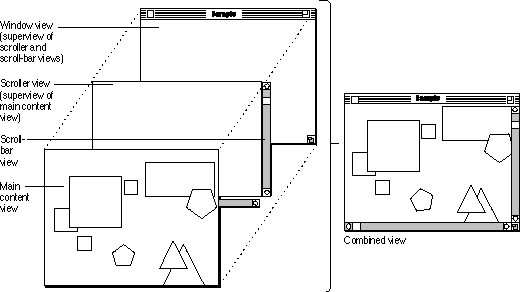

Legacy Document
Important: The information in this document is obsolete and should not be used for new development.
Important: The information in this document is obsolete and should not be used for new development.


Basic View Technology
MacApp uses views to represent a Macintosh window and each of its parts, including the window frame (which may include a title bar, size box, zoom box, and close box) and the content area of the window. In addition, many windows feature scroll bars and other control view objects.The sections that follow describe the major components of MacApp's view technology.
32-Bit Coordinate Space
MacApp supports very large views, using 32-bit coordinate values. Each view has its own coordinate system, with the point (0,0) representing the upper-left corner of the view.Figure 8-1 shows the values in global and window coordinates that correspond to a line drawn from the point (5,5) to the point (20,30) in a view's local coordinates. These view coordinates correspond to drawing a line from (55,55) to (70,80) in window coordinates or from (75,75) to (90,100) in global coordinates.
All drawing in a view takes place in 16-bit QuickDraw coordinates. Before drawing, MacApp focuses on the view by setting the QuickDraw origin so that (0,0) is at the upper-left corner of the view. A view's drawing method doesn't usually need to worry about global coordinates--it just calls a view method to convert from view coordinates to QuickDraw coordinates before drawing.
Figure 8-1 Local coordinate systems
MacApp supplies the following data types for working with view coordinates. The
Vin the names of these coordinate data types stands for "View".
Since QuickDraw coordinates are 16-bit values, the
VCoordinate- A long integer (32 bits) that represents a coordinate value
VPoint- A pair of
VCoordinatevalues, one for the x component of the point, and one for the y component of the pointVRect- A pair of
VPointvalues, one for the upper-left corner of the rectangle, and one for its lower-right cornerTViewclass provides conversion methods. These methods may call the view'sUpdateCoordinatesmethod to calculate the offset between view and Quickdraw locations. This value is stored in the View'sfViewToQDOffsetfield.
The
QDToViewPt- Converts a QuickDraw point into a
VPointvalueQDTOViewRect- Converts a QuickDraw rectangle into a
VRectvalueViewToQDPt- Converts a
VPointinto a QuickDraw pointViewToQDRect- Converts a
VRectinto a QuickDraw rectangleTViewclass also provides a number of methods for converting between the coordinates of a view and those of its superview or its window (which may not be the immediate superview), and for converting to global screen coordinates.These methods include:
Additional methods are available to perform conversions on
LocalToSuper- Converts a
VPointvalue from local view coordinates to superview coordinatesLocalToWindow- Converts a
VPointvalue from local view coordinates to window coordinatesSuperToLocal- Converts a
VPointvalue from superview coordinates to local view coordinatesWindowToLocal- Converts a
VPointvalue from window coordinates to local view coordinatesVRectandRegiondata types.Frame Size/Location
A view's size is specified by itsfSizefield, aVPointvalue, and the view's location within its superview is specified by itsfLocationfield, also aVPointvalue. These values can be changed with theResizemethod, which sets the view's size to the passedVPointvalue, and theLocatemethod, which causes the view to be located at the passedVPointlocation in the superview, or withSetFrame, which sets both the size and location.The
TViewclass also has an array fieldfSizeDeterminer, which contains two entries of typeSizeDeterminer, one for the view's vertical dimension and one for the horizontal. TheSizeDeterminerdata type specifies a view's size in relationship to the size of its superview. The possible values are
When an operation such as zooming a window causes a view's size to change, the new size of the view depends on the
sizeFixed- The view doesn't change its own size.
sizeVariable- The view computes its own size when the
AdjustFramemethod is called.sizePage- The view is the size of one page.
sizeFillPages- Similar to
sizeVariable, but rounded upward to fill an exact number of pages.sizeSuperView- The view is the same size as its superview.
sizeRelSuperView- The view size is relative to the superview's size.
fSizeDeterminerfield. TheTViewclass contains several methods that may be called when the view's size changes, includingSetFrame,AdjustFrame, andCalcMinSize. You can read more about these methods in the MacApp Class and Method Reference.View Hierarchies
The views in a window are linked into a hierarchy, with the window at the top. One view represents the window frame, another represents each scroll bar, another represents the main content area of the window, and so on. Each view can draw the part of the window it represents and can respond to events relating specifically to its part. Each view has a list of the subviews it contains.Figure 8-2 shows a simple view hierarchy. In this hierarchy, the window is the superview. It contains three immediate subviews, a scroller view and two scroll-bar views. The scroller view contains a subview of its own, the main content view. More complex view hierarchies may contain multiple content views.
The view object for the window draws the title bar, close box, zoom box, size box, and the blank white background of the window. It responds to mouse clicks in the title bar, close box, zoom box, and size box, which may specify dragging, closing, zooming, or resizing the window.
Figure 8-2 A view hierarchy in MacApp

Each view that represents a scroll bar is responsible for drawing the scroll bar, as well as for responding to mouse clicks in the scroll bar, which typically cause the scroll bar to redraw itself and tell the scroller view to scroll its visible area. That has the affect of scrolling the main content view, since it is a subview of the scroller view.
The main content view is responsible for drawing the document's content and may contain a number of subviews to aid in displaying the data. The behavior of content views varies widely from application to application. In the IconEdit sample application, the content view draws an icon at any level of magnification, and responds to mouse clicks by turning individual pixels on or off. In a word-processing program, the content view draws the current text-editing view and the visible part of its text.
A view hierarchy can be as simple as a window object with a single view, or as complex as a dialog box containing numerous nested views, including views that represent buttons, checkboxes, text fields, and other controls. View hierarchies have the following characteristics:
Figure 8-3 How a view is clipped to a window
- The window view (the view responsible for the window frame) is at the root of the view hierarchy and has no superview.
- Each view may have one superview--the view that owns it--and any number of subviews--the views that are subordinate to it.
Many applications require complex view hierarchies. The design and implementation of those view hierarchies can be greatly simplified by the use a view-editing application, a type of graphical user interface builder. A view-editing application allows you to specify view objects and hierarchies in an interactive, graphical environment. You can often edit views, run the application, and examine your changes, without modifying any code. For more information, see "Specifying Views With View Resource Templates," beginning on page 217.
- Each view displayed within a window is a subview of the window.
- A view is drawn after its superview, so it appears to be layered on top of its superview. The window view, including the frame, is the first view drawn, followed by its subviews, then their subviews, and so on.
- A view is drawn within the boundaries of--clipped to--its superview.
Figure 8-3 shows how a view is clipped to a window.
- Each view has its own coordinate system, described in the next section.
The TDrawingEnvironment Class
MacApp provides theTDrawingEnvironmentclass for storing characteristics of the graphics environment, including the pen size, pen pattern, pen mode, foreground color, and background color. You can associate an object of typeTDrawingEnvironmentwith each view object. This makes it possible to customize the drawing environment of a view without having to define a view subclass. You can use a view-editing application to specify the drawing environment for a view in its'View'resource.Drawing a View's Contents
In a MacApp application, drawing can refer to either of two operations:
This section describes how a MacApp application draws its views. For information on drawing with the mouse, see page 226.
- The application rendering its views on the screen.
- A user operating a mouse, trackball, pen, or other input device to sketch in a view.
MacApp calls the
Drawmethod whenever a view needs to be redrawn. Redrawing is necessary not only when a change is made in the view but also when the view is first shown or when any part of the view is uncovered by a user action. Since theDrawmethod ofTViewdoes nothing, you must overrideDrawin your view subclass and provide code to draw your view's contents.When MacApp calls the view's
Drawmethod, it passes a parameter specifying the minimum rectangle that needs to be redrawn. You can use this information to optimize yourDrawmethod to draw only the specified portion.Figure 8-4 shows how MacApp calls your drawing routines to update the views in a window. The
Drawmethod is called by theHandleDrawmethod of your view object (or bygDrawAdorner--see "MacApp's Adorner Classes," beginning on page 213).Figure 8-4 How MacApp updates the views in a window
MacApp calls
HandleDraw, which calls theDrawmethod of the view and then theHandleDrawmethod of all subviews.HandleDrawalso manages the drawing of adorners, described in "Adorners," beginning on page 213. You rarely, if ever, callDrawyourself; instead, you call one of the view methodsInvalidateRect,InvalidateRegion, orInvalidateVRectto invalidate the part of your view that has changed. You can also callForceRedrawto invalidate the entire view extent.In response to update events, MacApp calls the
Drawmethod of any view that has an area that is both visible and invalid. If you need to redraw a view immediately, you can call itsUpdatemethod (after invalidating).Your
Drawmethod can do any kind of drawing it wants, using the Macintosh QuickDraw routines. When MacApp calls yourDrawmethod, the view has already been focused, so that any QuickDraw calls you make are drawn in your view. (Focusing is described in the next section.) You use your view's local coordinate system, and the drawing takes place in the correct location. Drawing is clipped to the view's superview.You can read more about Macintosh drawing in Inside Macintosh: Imaging
With QuickDraw.Focusing
Before drawing can take place, a view must be prepared so that drawing will appear in the correct place on the screen. This is called focusing the view. Focusing includes setting the QuickDraw graphics port, setting the port's coordinate system to match the view's coordinates, and clipping the view's drawing to the margins of its superview (clipping is shown in Figure 8-3).To focus a view in MacApp, you call the
TView::Focusmethod. MacApp automatically callsFocusat many times, including when a view is activated, updated, zoomed, or drawn. The global variablegFocusedViewis set to refer to the currently focused view. MacApp usesgFocusedViewto avoid performing unnecessary calculations whenFocusis called for a view that is already focused.If necessary, the
TView::Focusmethod sets the current port to the port of the window the view resides in, calls the Toolbox routineSetOriginto set the port's origin to the origin of the view, and clips the view to the visible area of its superview.The
Focusmethod recursively callsFocusOnSuperView, which callsFocusfor the view's superview if it has one. View hierarchies always have a window as the topmost view, and theTWindow::Focusmethod sets the clip region to the window's update region, if there is an update pending; otherwise, it sets the clip region to the window's visible region.
FocusreturnsFALSEif it is unable to focus. For example,Focusfails if no superview is able to supply a port--that is, if the view is not in a window and the application is not printing or drawing into a QuickDrawPicture.
FocusreturnsTRUE, however, if it is able to focus but none of the view is currently visible due to clipping or scrolling by a superview. This allows you to assemble a view hierarchy and focus its views without necessarily showing them to the user. After focusing, you can call theTViewmethodIsVisibleto determine whether the view is in fact visible. MacApp never asks a view to draw unless it is visible.Adorners
An adorner is a graphical object that knows how to draw in the view to which it is attached. Each view object contains a list of zero or more adorners. Whenever the view'sDrawmethod is called, theDrawAdornersmethod is also called (if the view has any adorners). TheDrawAdornersmethod iterates through the view's list of adorners, calling theDrawmethod for each adorner.Adorners can be used to
An adorner can be associated with multiple views, so you can create an adorner to perform a special kind of drawing and attach it to all the views that can benefit from that drawing. You can specify an adorner for a view in a
- adorn controls in dialog boxes (such as 3D control buttons)
- draw borders in views
- draw the publisher and subscriber borders for Edition Manager support
- perform highlighting in views
'View'resource with a view-editing application, or you can add an adorner to a view object in your application by calling the view'sAddAdornermethod.MacApp's Adorner Classes
MacApp defines a number of adorner subclasses that you can instantiate in your application, each of which implements a specific kind of drawing or highlighting. These include frame adorners, line adorners, oval adorners, and rectangular adorners.MacApp also provides global access to certain standard adorners it creates:
gDimAdorner- The
Drawmethod ofgDimAdornercalls theDimmethod of the view it is attached to.gDrawAdorner- The
Drawmethod ofgDrawAdornercalls theDrawmethod of the view. It is added to a view's adorner list automatically if the view has any other adorners, so you have control over when the view is drawn relative to the other adorners (as described in "Adorner Priorities," beginning on page 215).gEraseAdorner- The
Drawmethod ofgEraseAdornererases the area of the view that will be drawn. This adorner is automatically added to window objects.gHiliteAdorner- The
Drawmethod ofgHiliteAdornercalls theHilitemethod of the view.gPrintAdorner- The
DoHighlightSelectionmethod ofgPrintAdornercalls theDoDrawPrintFeedbackmethod of the view. This adorner is added automatically by MacApp when a print handler is attached to the view.gResizeIconAdorner- The
DoHighlightSelectionmethod ofgResizeIconAdornercalls the window'sDrawResizeIconmethod. This adorner is added automatically to any resizable window object.gSelectionAdorner- The
DoHighlightSelectionmethod ofgSelectionAdornercalls theDoHighlightSelectionmethod of the view.- Note
- The
TAdornerclass has an instance variablefIdentifier, of typeIDType, that specifies the type of adorner object. MacApp defines identifier constants for its predefined adorner classes in the UAdorners unit.
How a View's Adorners Are Drawn
A view is drawn through a call to itsHandleDrawmethod, which behaves as follows:
- If the view has any adorners, the view's
DrawAdornersmethod is called to iterate over the list of adorners. If the view has no adorners, the view'sDrawmethod is called instead.When a view does have adorners, MacApp automatically installs
gDrawAdornerso that the view's ownDrawmethod is always called, and so that you have control over when it gets drawn relative to the other adorners (as described in the next section).- Each behavior attached to the view is given an opportunity to draw.
- The
HandleDrawmethod is called for each subview of the view.- The
HighlightAdornersmethod of the view is called to iterate through the list of highlighting adorners attached to the view and call theDoHighlightSelectionmethod of each adorner that needs to perform highlighting.
Adorner Priorities
You use theTViewmethodAddAdornerto add an adorner to a view's list of adorners.AddAdorneris defined as follows:
virtual void AddAdorner ( TAdorner *anAdorner; AdornPriority itsPriority, Boolean invalidate );TheitsPriorityparameter specifies the drawing priority for the adorner in the list: the lower the priority value, the earlier the adorner is called to draw. MacApp defines several adornment priority constants:
const short kAdornLast = 127; const short kAdornAfter = kAdornLast - 32; const short kDrawView = 64; const short kAdornBefore = kDrawView - 32; const short kAdornFirst = 0;The priority assigned to calling the view's ownDrawmethod iskDrawView. If you add an adorner with a priority lower thankDrawView, it will be drawn before the view'sDrawmethod; with a higher priority, it will be drawn after the view'sDrawmethod. You never specify a priority value ofkDrawViewfor an adorner that you add. Always use a value that is lower or higher thankDrawView.Highlighting in a View
Highlighting is performed whenever a view is drawn and whenever the view's highlight state changes (becoming active or inactive). Highlighting is not performed for printing or imaging for the Clipboard.MacApp's highlighting mechanism works through the combined effort of view and adorner objects. A view uses highlighting
MacApp's designators provide a standard way to keep track of what is selected in a view. Designators are described in Chapter 7, "Document Handling." Visual feedback for drag and drop is described in Chapter 9, "Drag and Drop."
- to show that an item within the view has been selected by the user
- to provide an outline of draggable data when a drag is initiated
- to show that the view can accept data that is dragged over it
- to show that the view is not currently active
When MacApp draws a view, it first focuses the view (page 212), then calls the view's
Drawmethod (page 210), then calls theHighlightAdornersmethod. TheHighlightAdornersmethod iterates over the view's adorners, giving each adorner a chance to draw its adornment in the view.Highlighting and Selection Adorners
MacApp supplies every application with a number of global adorner objects, including two that are useful for highlighting and selecting,gHiliteAdornerandgSelectionAdorner.
- The
Drawmethod of theTHiliteAdornerclass calls theHilitemethod of its view. InTView, theHilitemethod just inverts the view's QuickDraw extent. TheTControlview class overrides theHilitemethod to invert the control area when the user clicks the control.- The
Drawmethod ofTSelectionAdornercalls theDoHighlightSelectionmethod of its view. InTView, theDoHighlightSelectionmethod does nothing. A view class can override this method to highlight user selections in the view. MacApp'sTGridViewclass provides an example of how the selection adorner is used--it addsgSelectionAdornerto its adorner list in its initialization method.
Highlighting States
MacApp defines theHLStatetype for storing a highlight state, along with constants for specifying the different states of highlighting in a view. These states apply to the view itself or to selected items in the view:
You pass these constants to view highlighting methods to indicate the previous state and the desired state of highlighting.
hlOff- The view is unhighlighted.
hlDim- The view is dimly highlighted (inactive).
hlOn- The view is fully highlighted (active).
For example, the
DoHighlightSelectionmethod is defined as follows:
void DoHighlightSelection(HLState fromHL, HLState toHL);A view must be focused before callingDoHighlightSelection; you can ensure this, as MacApp does, by calling theFocusmethod of the view object before callingDoHighlightSelection.Specifying Views With View Resource Templates
MacApp provides a useful tool for defining views and view hierarchies: view resource templates. A view resource template defines the resource format for a MacApp view class. View resource templates are defined as'View'resource definitions in the fileViewTypes.r.You can use a resource-editing application that knows about
'View'resource templates, such as Ad Lib (available from Apple Computer), to create view resources that specify the user interface for your application. A view resource can define an entire window or view hierarchy, containing many MacApp view objects, such as views that represent checkboxes, radio buttons, and other controls. You can specify the initial settings for any window or view in the view hierarchy. And you can reuse a view resource whenever you need a view of the same type. For example, all documents of a given type can create their views using the same view resource.By editing your view resources and rebuilding the application, you can change the appearance and initial settings of your windows without recompiling your application's code. This allows great flexibility in changing the appearance and behavior of your views, with fast turnaround. For more information, see "Working With View Resource Templates," beginning on page 425.
Your application uses MacApp's global view server object,
gViewServer(described in the next section) to create windows and views based on the view resources you have defined.The TViewServer Class
TheTViewServerclass provides methods to manage the creation of views for your application. During initialization of the application, MacApp automatically creates aTViewServerobject and stores a reference to it in the global variablegViewServer. You create views by calling on the methods ofgViewServerlisted here:
Figure 8-5 shows the process of creating a view hierarchy from a view resource. In this example, a document's
NewPaletteWindow- Creates a window that has a main view which may or may not scroll, plus a nonscrolling palette along the left edge or a nonscrolling status area at the top of the window.
NewSimpleWindow- Creates a simple window that contains one view, which may or may not scroll.
NewTemplateWindow- Creates a window from a
'View'resource. The window may have a view hierarchy of arbitrary complexity.DoCreateViews- Creates a view hierarchy of arbitrary complexity from a
'View'resource, then calls theDoPostCreatemethod. The view hierarchy is not assumed to have a window at its root.DoMakeViewsmethod calls theNewTemplateWindowmethod of thegViewServerobject.NewTemplateWindowcalls theDoCreateViewsmethod, which uses MacApp's streaming mechanism to create the view objects specified by the view resource. After the whole view hierarchy has been created, theDoCreateViewsmethod calls theDoPostCreatemethod for each view it creates, giving each view a chance to perform additional initialization that may depend on the existence of other views in the hierarchy.Figure 8-5 Creating a window from a resource template
Registering View Classes
If your application uses resources to define view hierarchies, it must register its view classes so that the view server can create views based on class names stored in the view resource. To register your view classes, MacApp provides theMA_REGISTER_CLASSmacro, which is invoked with a line like one of the following:
MA_REGISTER_CLASS(TYourViewClass);or
MA_REGISTER_SIGNATURE(TYourViewClass,KYourViewSignature);For more information on theMA_REGISTER_CLASSmacro, see "Registering Class Information," beginning on page 30.Scrolling
Most windows that display data on the Macintosh feature scroll bars that allow the user to scroll through the data when it cannot all be displayed at once in its enclosing view. MacApp provides theTScrollersubclass ofTViewto manage scrolling of the data displayed in views and theTScrollerScrollBarclass to display a scroll bar that knows how to work with aTScrollerobject. Figure 8-2 on page 208 shows a view hierarchy with a scroller view and scroll bars.Scrolling is implemented by adding a scroller view to the view hierarchy, beneath the view or views to be scrolled. The scroller view is invisible--it exists merely to impose a translation on the contents of the window. The scroller view shifts the coordinates of any view drawn on top of it by a translation amount. The translation amount may be specified by user manipulation of a scroll bar but is not limited to that source.
When a scroller scrolls, it offsets the visible region of the view or views to be scrolled by the translation amount. It then calls the Toolbox routine
ScrollRect, which moves the specified data (up, down, left, or right) and returns a region showing the area that needs to be redrawn (the area that is scrolled into view). The scroller then invalidates that region, causing it to be redrawn. Using this mechanism, only the new area that was scrolled into view needs to be redrawn.As with any view, drawing in a scroller is clipped to the superview.
Autoscrolling
Autoscrolling is the process of scrolling automatically when a user moves the cursor to the boundaries of a view. MacApp supports autoscrolling in its tracker commands, which are described in more detail in "Drawing With the Mouse," beginning on page 226. One of the parameters of theITrackerinitialization method of theTTrackercommand is
TScroller* itsScrollerIf your drawing view contains a scroller subview, and if you supply a reference to that scroller when initializing a drawing command that descends fromTTracker, the drawing command will automatically support autoscrolling in the view. You can use theGetScrollermethod ofTViewto obtain a reference to a view's enclosing scroller, if any. For more details, see "Recipe--Implementing Autoscrolling" on page 396.MacApp also supports autoscrolling automatically for drag operations in its views that support drag and drop.
Synchronized Scrolling
Synchronized scrolling refers to the simultaneous scrolling of more than one view. MacApp provides theTPrimaryScrollerandTSecondaryScrollerclasses to implement synchronized scrolling. ATPrimaryScrollerobject has a list of secondary scrollers. If that list is notNULL, when the primary scroller scrolls, it makes the scrollers in the list scroll too.Synchronized scrolling is demonstrated in the Calc sample application.